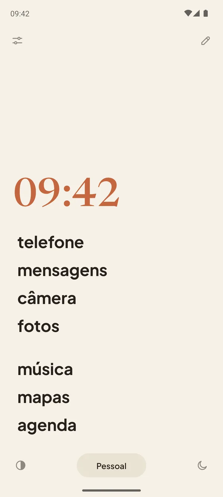
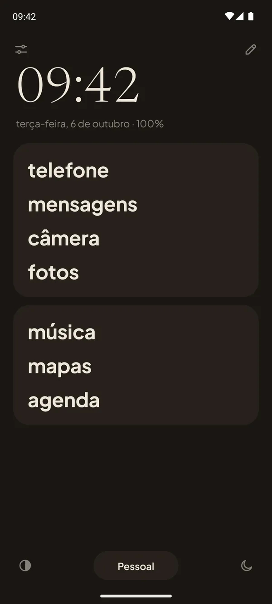
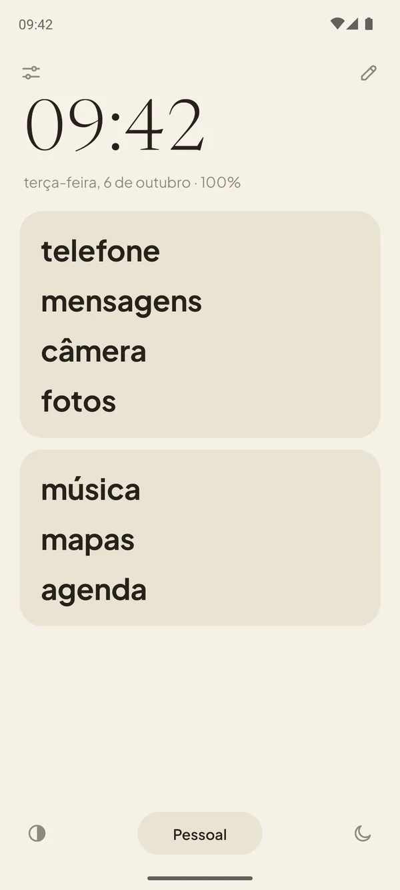
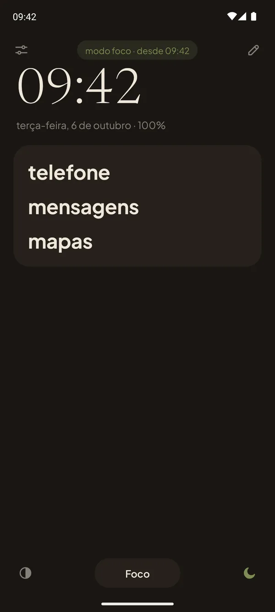
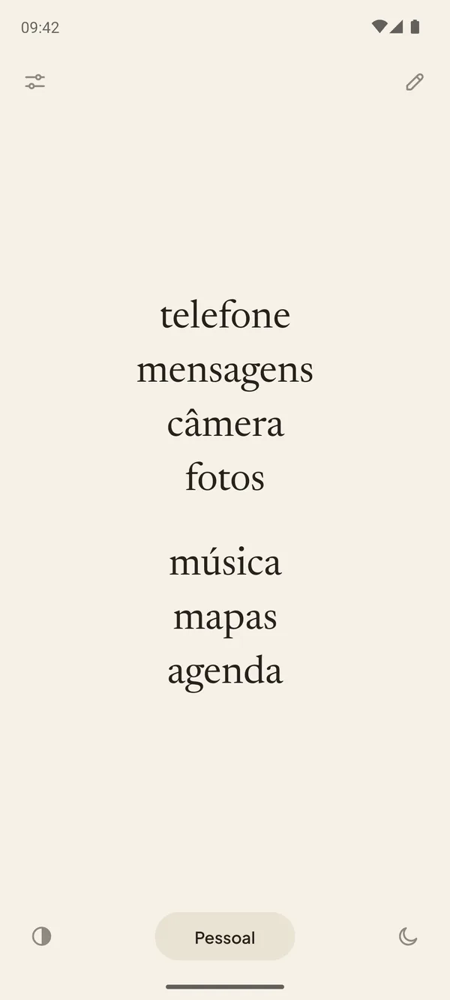
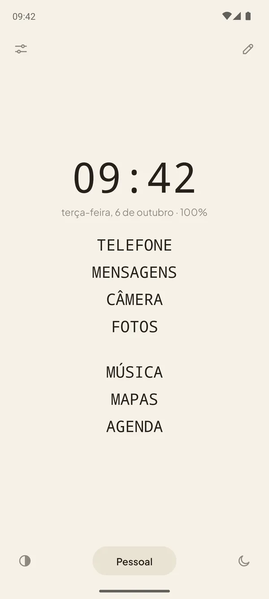
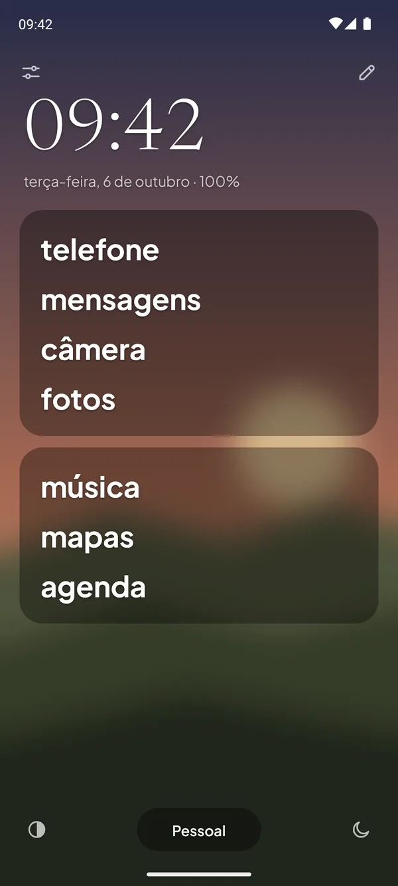

O Pauca é um launcher minimalista para Android que transforma a sua tela inicial numa lista calma de palavras. Sem ícones, sem bolinhas vermelhas, nada chamando sua atenção. Só os apps que você usa, com os nomes que você escolher.
Compra única · Sem assinatura · Sem anúncios · Sem permissão de internet



O celular foi feito para ser pego na mão. O Pauca foi feito para você poder largá-lo.
Ícones coloridos, bolinhas vermelhas e feeds sem fim são desenhados para chamar o seu olhar. O Pauca tira tudo isso. O que sobra é uma página calma de palavras: você abre o que veio buscar, e pronto.
O nome vem do latim pauca, “poucas coisas”, como no lema de Gauss: pauca sed matura, poucas, mas maduras. Um celular com menos coisas, bem escolhidas.
Três passos para um celular mais calmo.
Escolha os poucos
Coloque nos cartões os apps que você usa de verdade. O resto fica a um deslize.
Dê os seus nomes
“mãe” em vez do app de mensagens, “banco” em vez de um nome comprido. Em minúsculas, como escrito ou MAIÚSCULAS.
Deslize para o resto
Para cima, você busca entre todos os apps; para baixo, as notificações. Toque duplo bloqueia a tela.
Foco que silencia de verdade.
Um toque e o celular fica quieto. Ou deixe um perfil fazer isso: troque para “Noite” e o foco começa sozinho.
- Não Perturbe com uma regra própria, e você escolhe quem ainda pode ligar
- Notificações seguradas, com um resumo quando você volta
- Uma gaveta só com os apps permitidos
- Os outros apps pausados: abriu um, voltou para o início
- Tela em tons de cinza, se você quiser

Do seu jeito.
Cinco temas, qualquer cor de destaque, e as suas fontes, tamanhos, peso e alinhamento. Esconda o relógio, os botões e até a barra de status.
Experimente uma cor de destaque


Sua foto, suavizada.
Use qualquer foto como fundo, com desfoque e brilho, para ela ficar no fundo mesmo. Também na tela de bloqueio, com ajustes próprios.

E tudo o mais que você espera.
Perfis
Pessoal, Trabalho, Noite: cada um com os seus cartões, a um toque.
Uma gaveta de verdade
Busca, categorias e uma lupa flutuante. Sem ícones.
Gestos
Deslize para cima, para baixo e para os lados para abrir um app que você escolher.
Tour guiado
Um tour rápido mostra cada parte da tela na primeira vez.
Três idiomas
Português, inglês e espanhol.
Espaço privado
Funciona com o espaço privado do Android e com apps ocultos.
Privado por projeto, não por promessa.
O Pauca não tem permissão de internet. Não é que a gente escolha não enviar seus dados: o app simplesmente não consegue. Sem contas, sem estatísticas, sem anúncios, sem rastreadores.
Ler a política de privacidade →Um pagamento. É seu para sempre.
O Pauca é uma compra só. O Pauca Lite, a versão grátis com o essencial, está a caminho da Google Play.
Pauca LITE
- Cartões de apps com os seus nomes
- Gaveta com busca e categorias
- Gestos para apps e notificações
- Dois perfis
- Temas claro e escuro
- Cor oliva, azul ou nenhuma
Pauca
Tudo do Lite, e mais:
- Modo foco que silencia de verdade
- Perfis ilimitados
- Cinco temas, até a sua foto
- Todas as cores de destaque, ou a sua
- Fontes, peso e alinhamento
- Esconda botões, relógio e barra de status
- Toque duplo para bloquear
Aberto, e feito com cuidado.
O Pauca é código aberto, sob a GPLv3, feito a partir do Olauncher, de Tanuj. Feito no Brasil por Gabriel Dias.
Dúvidas
O que é o Pauca?
O Pauca é um launcher minimalista para Android. Ele troca a sua tela inicial por uma lista calma, só de texto, com os apps que você escolher, sem ícones, bolinhas nem widgets, e traz um modo foco que silencia o celular de verdade. É feito por Gabriel Dias, da Catta Studios, e tem código aberto sob a GPLv3.
O Pauca transforma meu celular num dumbphone?
Na ideia, sim: a tela inicial fica simples como a de um dumbphone, só com palavras. Mas continua sendo o seu Android, e todo app segue a um deslize, a não ser que você o pause no modo foco.
Quanto custa o Pauca?
R$ 4,99 no Brasil, em compra única na Google Play. Não tem assinatura nem anúncios, e as atualizações vêm junto. O Pauca Lite chega em breve à Google Play.
O Pauca coleta meus dados?
Não. O Pauca não tem permissão de internet, então não consegue enviar nada para lugar nenhum. Não tem contas, estatísticas, anúncios nem rastreadores, e seus cartões e ajustes ficam no seu celular.
Funciona no meu celular?
O Pauca funciona no Android 7 ou mais novo, de qualquer marca, inclusive Samsung Galaxy e Google Pixel.
Dá para voltar para a minha tela inicial de antes?
A qualquer momento. O Pauca é só um app de tela inicial: escolha outro nos ajustes do celular, ou desinstale. Nada mais no seu celular muda.
Ele bloqueia meus apps?
Só se você quiser. No modo foco, o Pauca pode pausar os apps fora da sua lista. Fora do foco, todo app está a um deslize.
Qual a diferença entre o Pauca e o Pauca Lite?
O Lite é grátis e cobre o essencial. O Pauca traz o modo foco, perfis ilimitados e toda a personalização, por um preço único. Se você começar pelo Lite, o Pauca leva a sua configuração junto. O Pauca Lite chega em breve à Google Play.
Tem assinatura?
Não. Você paga uma vez, e as atualizações vêm junto.
Tem widgets ou pacotes de ícones?
Não, de propósito. O Pauca é sobre ter menos coisas na tela.
Por que ele pede acessibilidade?
Só o Pauca pede, o Pauca Lite não. É só para bloquear a tela com o toque duplo e, no modo foco, pausar os apps fora da sua lista. É opcional e não lê a sua tela.